Cut
Cut
「割」有兩種定義方式：
一、「割」是點集合：圖上所有點分成第一群和第二群。
二、「割」是邊集合：第一群點連向第二群點的邊。
「割」還有另一種等價觀點：
一、「割」是點集合：從圖上挑出一群點。
二、「割」是邊集合：一群點連向其他點的邊。
點分成兩群，一種分法就是一個Cut。所有點可以集中在同一群，此時另一群就是空的。
V個點的有向圖，一共有2^V種Cut。V個點的無向圖，第一群和第二群的順序沒有差別，一共有(2^V)/2種Cut。
一個Cut的權重，是所有邊的權重總和。
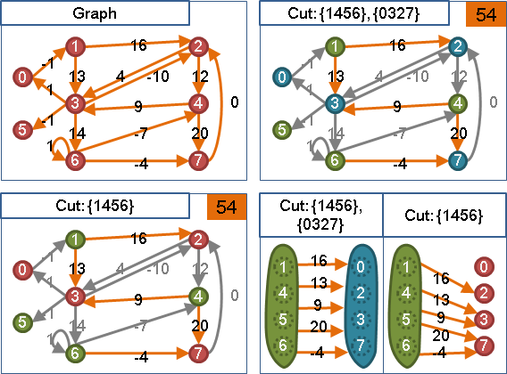s-t Cut
限制s點位在第一群、限制t點位在第二群的Cut。
s點、t點所屬的點集合，一般稱作s側、t側。
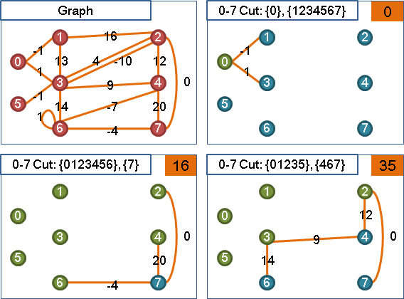Minimum Cut
「最小割」，一張圖權重最小的Cut，可能會有許多個。
求最小割是NP-hard問題。當圖上沒有負邊，才有多項式時間的演算法。
Maximum Cut
求最大割是NP-hard問題。圖上每一條邊變號後，求最大割就變成求最小割。當圖上沒有正邊，才有多項式時間的演算法。
一群點收縮為一個點
收縮一群點之後，這群點連接的邊就集中在同一點了。
收縮同屬一群的點，Cut的權重依舊相同。
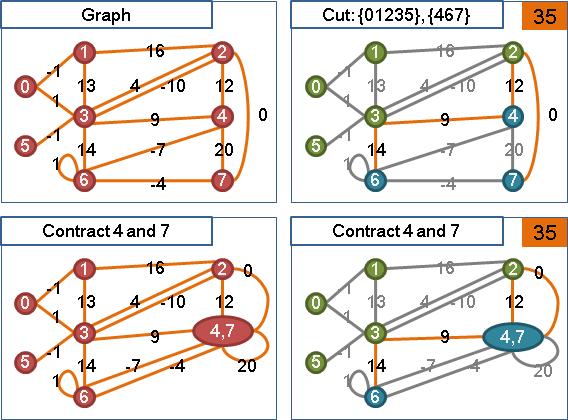多重的邊變成單獨的邊
當一點到另一點有多重的邊，加總這些邊的權重，合併成單獨的邊，Cut的權重依舊相同。
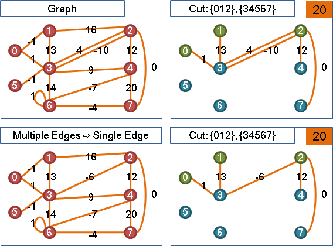Submodular Function
一道特別的不等式，說明原集合、交集、聯集之間的大小關係。
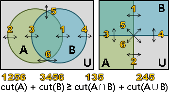當圖上只有正邊、零邊的時候，Cut的權重也符合這個不等式。這裡只證明無向圖，至於有向圖也是成立的。
Minimum s-t Cut: Max-Flow Min-Cut Theorem
用途
以最大源匯流Maximum s-t Flow，求出其中一個最小源匯割Minimum s-t Cut。
限制：有向圖，只有正邊、零邊，不得有負邊。
亦得用於無向圖，每一條無向邊都換成兩條有向邊。
演算法
根據最大流最小割定理，在一張圖上求得一個最大源匯流（流量），則同時形成至少一個最小源匯割（容量）。陰陽相生。
找到最大流之後，部分管線滿溢，達到容量上限，形成瓶頸，即是最小源匯割所在之處。
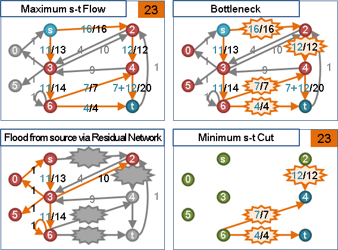由源點開始遍歷，不通過管線滿溢的邊，能夠觸及的點集合（瓶頸之前）、無法觸及的點集合（瓶頸之後），就是其中一個最小源匯割；而且源點側的點數是最少的。
由匯點開始反向遍歷，亦有類似結果。
一個最大源匯流，能找到不只一個最小源匯割。通常我們只找源點側點數最少的、匯點側點數最少的，其他的最小源匯割則不好找。
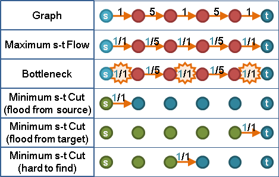UVa 10480 ICPC 5099
Minimum s-t Cut
Minimum s-t Cut
介紹幾個Minimum s-t Cut的基本性質。以下只針對無向圖無負邊的最小割。
這些性質是了無生趣的數學。如果您無暇深究，可以略過不看；如果您打算設計新演算法，可以參考看看。
性質名稱是我隨興取的。歡迎各位讀者提供建議。
性質：叛離
一個最小st割，從s側或t側分離出一群點（不移動s點與t點），得到不等式：
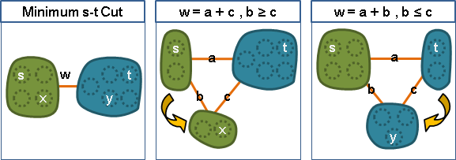從一側分離出一群點到另一側（不移動s點與t點），權重將變大、或者不變（遇到另一個最小st割）：
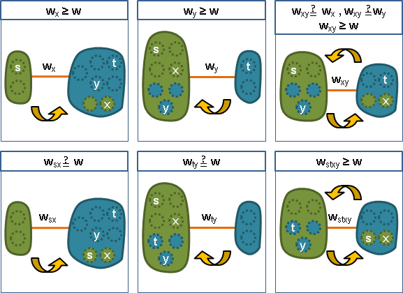各種st割的權重，一定比最小st割的權重來得大、或者相等。
性質：基準
一個最小st割。x點在s側，y點在t側，那麼最小xy割的權重小於等於最小st割的權重。
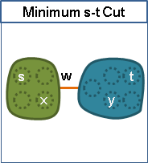最小xy割的背後有著最小st割撐腰，青出於藍更勝於藍。
性質：共側
圖上任取三點ijk，求出最小ij割、最小jk割、最小ki割。
權重較小的那兩個割，事實上權重相等；那兩個割可以是同一個割。
以幾何角度來看，ijk是頂角大於等於60°的等腰三角形。
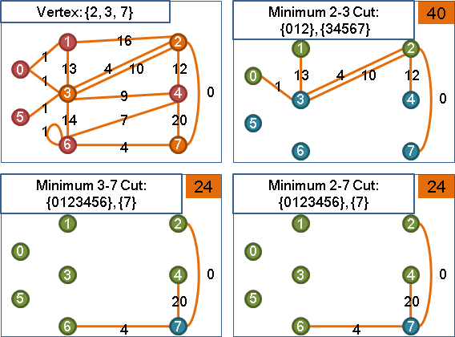一、最小ij割、最小jk割、最小ki割， 找到權重最小的。 不失一般性，暫定是最小ij割。 二、要嘛k點在i側，要嘛k點在j側。 甲、暫定k點在j側。 由基準性質可知：最小kj割的權重小於等於最小ij割的權重。 又因為最小ij割已經是權重最小的， 所以，最小kj割的權重被迫等於最小ij割的權重。 既然權重相等，那麼是同一個割也無所謂。 乙、暫定k點在j側。 同理，最小ki割的權重被迫等於最小ij割的權重。
此性質可用min函數表示，但是性質會變弱、失真：
最小st割的權重，標作Wst。 圖上任意三點ijk， Wik ≥ min(Wij, Wjk) 數學歸納法，推廣至任意序列： Waz ≥ min(Wab, Wbc, Wcd, ..., Wyz) 等號什麼時候成立？似乎沒有多大討論意義。
性質：交集與聯集
一個最小st割、一個最小xy割，各取一側進行交集或聯集。當交集不是空集合，則有可能是：
另一個最小st割、另一個最小xy割、權重更小或一樣的其他割、權重不明的其他割。
根據stxy四個點所在位置，可以鑑定結果是哪些種。詳細情況請見下列證明過程。
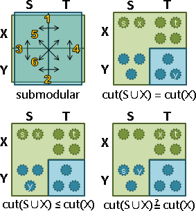一、cut(S) + cut(X) ≥ cut(S∩X) + cut(S∪X)。 二甲、假設cut(S∩X)不含s點、不含t點。 此時歸納不出任何結論。 二乙、假設cut(S∩X)含有s點、不含t點，是個st割。 因為cut(S∩X)是st割，又知道cut(S)是最小st割，所以 cut(S∩X) ≥ cut(S)。 然後併入步驟一的式子，輕鬆得到 cut(S∪X) ≤ cut(X)。 三甲、假設cut(S∪X)含有x點、不含y點，是個xy割。 以最小xy割cut(X)為基準，根據叛離性質， cut(S∪X)的權重只會變大（或不變）， cut(S∪X) ≥ cut(X)。 然後併入步驟二乙的結論，輕鬆得到 cut(S∪X) = cut(X)。 證得cut(S∪X)與cut(X)都是最小xy割。 三乙、假設cut(S∪X)含有x點也含有y點，不是個xy割。 此時無法套用叛離性質。 使用步驟二乙的結論 cut(S∪X) ≤ cut(X)。 證得cut(S∪X)是比cut(X)權重更小（或一樣）的其他割。 四、附帶一提，無向圖上，一個割的兩側，對調也無妨， cut(S∪X) = cut(T∩Y)。 步驟二，可以改為假設cut(S∩X)是xy割， 然後在步驟三，對應地改成st割， 最後就得到cut(S∪X)與cut(S)的關係。 步驟一，可以改為其他submodular function： cut(S) + cut(X) ≥ cut(S∩X) + cut(S∪X)，證得cut(S∪X)。 cut(S) + cut(Y) ≥ cut(S∩Y) + cut(S∪Y)，證得cut(S∪Y)。 cut(T) + cut(X) ≥ cut(T∩X) + cut(T∪X)，證得cut(T∪X)。 cut(T) + cut(Y) ≥ cut(T∩Y) + cut(T∪Y)，證得cut(T∪Y)。 步驟二，以cut(S∩X)或者以cut(S∪X)作為主角都是可以的。 最後證得的分別是(S∪X)與cut(S∩X)。
Minimum Cut Tree
已知一個最小st割，又有xy兩點。
甲、xy兩點同在s側（xy兩點同在t側）：
根據聯集交集性質，可以發現最小xy割不只一個。最小xy割的某一側，可以完全包含t側。無論xy是哪兩點都成立！
也就是說，就算收縮t側、不理t側，仍然可以找到一個最小xy割。用抽象感覺來說，s側與t側劃清界線、各自為政。
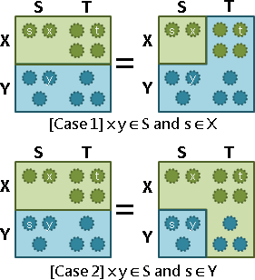乙、x點在s側、y點在t側（x點在t側、y點在s側）：
根據基準性質，最小xy割的權重，一定小於等於最小st割的權重。
由甲乙得知「最小割樹」的存在：樹上取st兩點，s點到t點的路徑當中，權重最小的邊（路徑瓶頸），就是最小st割的權重；移除權重最小的邊，即形成最小st割。
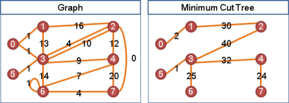一張無向圖的最小割樹可能有許多棵。至於有向圖的最小割樹，至今仍未被發現。
最小生成樹、最小割樹
最小生成樹：任意兩點之間的路徑，最寬的邊盡量窄。 最小割樹：任意兩點之間的所有通道，最寬的切面盡量窄。
UVa 11603 10816 ICPC 4848
All Pairs Minimum s-t Cuts: Divide and Conquer
演算法（Gomory-Hu Algorithm）
求得無向圖的一棵最小割樹。
http://www.cs.bgu.ac.il/~visproj/eransagi/flow.html
Divide： 隨便求一個Minimum s-t Cut，得到s側、t側。 注意到s點和t點必須是圖上原本的點，而不是收縮之後的點。 Conquer： 此圖收縮t側（得t'點），遞迴求解，得到s側的Minimum Cut Tree。 此圖收縮s側（得s'點），遞迴求解，得到t側的Minimum Cut Tree。 Combine： 新增邊s't'，權重設定為Minimum s-t Cut的權重。 所有新增的邊，最後拼在一起，構成一棵Minimum Cut Tree。
時間複雜度
為下列三項總和，主要取決於第一項：
一、求V-1次最小st割的時間。
二、收縮點的時間，平均O(VlogV)，最差O(V^2)。
三、新增邊的時間，共V-1條邊，O(V)。
使用Dynamic Programming建立表格，就能快速得到所有兩點之間的最小st割，時間複雜度與空間複雜度都是O(V^2)。
加速
如果原圖已經有一部分是樹，此部分顯然就是最小割樹，不必再逐次計算最小st割。
UVa 11603
All Pairs Minimum s-t Cuts: Incremental Method
演算法（Gusfield's Algorithm）
求V-1次最小st割，得到無向圖的一棵最小割樹。
時間複雜度為求V-1次最小st割的時間。
演算法：找出一棵最小割樹
一、初始化最小割樹： 第零點是中心，第一點到第V-1點皆連向第零點。 二、依序處理第一點到第V-1點： 甲、當前點s，只有連向點t。 邊st的權重設定為最小st割的權重。 乙、屬於s側的點x，全部改為連往s點。 邊xs保持原本設定的權重。
【待補程式碼】
演算法：找出一棵簡易版的最小割樹（Equivalent Flow Tree）
此樹只能求得最小st割的權重，但是不能求出最小st割。
一、初始化最小割樹： 第零點是中心，第一點到第V-1點皆連向第零點。 二、依序處理第一點到第V-1點： 甲、當前點s，只有連向點t。 邊st的權重設定為最小st割的權重。 乙、屬於s側、並且尚未處理的點，全部改為連往s點。
UVa 11594
Minimum Cut: Stoer-Wagner Algorithm
用途
求出一張無向圖的其中一個最小割。
限制：無向圖，只有正邊、零邊，不得有負邊。
Maximum Adjacency Search（MAS）
可視作「Maximum Cardinality Search」引入權重之後的版本。每回合找到一個點，連往已拜訪點的權重總和最多。如果很多點同時符合條件，則任選一點。
Graph Traversal引入權重，常見的情況就是Maximum Adjacency Search、Prim's Algorithm、Dijkstra's Algorithm這三種。
時間複雜度是O(V^2)。運用Binary Heap得壓至O(V+ElogV)。運用Fibonacci Heap得壓至O(E+VlogV)。
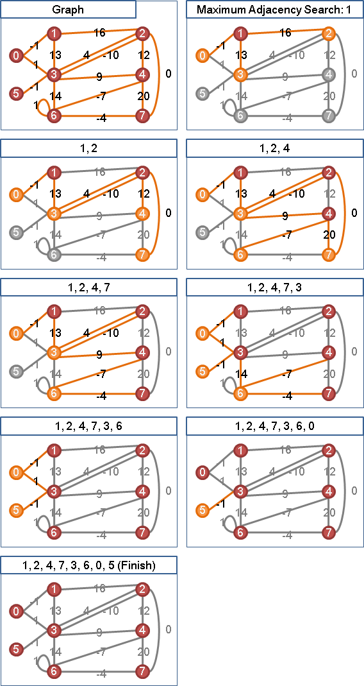當圖上無負邊，
Maximum Adjacency Search最後兩點形成Minimum s-t Cut
令Maximum Adjacency Search的遍歷順序是v1…vn，最後兩點是vn-1與vn。
當圖上無負邊，{v1…vn-1}與{vn}是一個最小vn-1vn割。
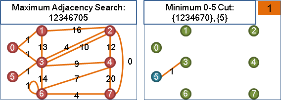一、欲證cut(v1~n-1, vn)是最小vn-1vn割。 二、觀察vn-2與vn-1與vn這三點，根據共側性質， 最小vn-2vn-1割、最小vn-2vn割、最小vn-1vn割， 其中權重比較小的那兩個割，權重相等。 三、嘗試找到最小vn-2vn-1割、最小vn-2vn割， 並且證明cut(v1~n-1, vn)的權重同時小於等於這兩個割， 那麼根據共側性質，cut(v1~n-2, vn)就一定是最小vn-1vn割。 四、以下用數學歸納法證明，但是以反方向講解。 basis step: 圖上只有兩點一邊時，顯然是一個最小st割。 inductive step: 一、從圖上移除邊vn-1vn， 不影響vn-1vn割的位置，刪除也無妨。 二、最小vn-2vn-1割的部分： 甲、從圖上移除vn（以及連著的邊）。 重新實施Maximum Adjacency Search，順序仍舊相同，vn-2與vn-1成為最後兩點。 遞迴求解，證得cut(v1~n-2, vn-1)是一個最小vn-2vn-1割。 乙、因為vn-1與vn兩點之間沒有邊， 把vn（以及連著的邊）加回到cut(v1~n-2, vn-1)的vn-2側， 得到cut(v1~n-2 + vn, vn-1)是原圖的一個最小vn-2vn-1割。 丙、由Maximum Adjacency Search倒數第二步的選擇，可知 cut(v1~n-2, vn-1) ≥ cut(v1~n-2, vn) 又因為vn-1與vn兩點之間沒有邊， cut(v1~n-2 + vn, vn-1) ≥ cut(v1~n-2 + vn-1, vn) 顯然地， cut(v1~n-2 + vn, vn-1) ≥ cut(v1~n-1, vn) 也就是說，cut(v1~n-1, vn)的權重小於等於最小vn-2vn-1割。 三、最小vn-2vn割的部分： 甲、從圖上移除vn-1（以及連著的邊）。 重新實施Maximum Adjacency Search，順序仍舊相同，vn-2與vn成為最後兩點。 遞迴求解，證得cut(v1~n-2, vn)是一個最小vn-2vn割。 乙、因為vn-1與vn兩點之間沒有邊， 把vn-1（以及連著的邊）加回到cut(v1~n-2, vn)的vn-2側， 得到cut(v1~n-2 + vn-1, vn)是原圖的一個最小vn-2vn割。 丙、顯然地， cut(v1~n-2 + vn-1, vn) = cut(v1~n-1, vn) 也就是說，cut(v1~n-1, vn)的權重小於等於最小vn-2vn割。 四、由二丙、三丙，得證。
想法
圖上隨意取一條邊，要嘛在割上，要嘛不在割上。
圖上隨意取兩個點，要嘛在割異側，要嘛在割同側。
這兩句話都是一樣意思，用哪一句話當作主角都行。
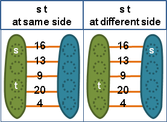藉由此觀察，得到了Divide and Conquer的機會。隨意取st兩點，分別計算這兩種情況下的最小割：
一、假設st在最小割異側：最小割根本就是最小st割！
二、假設st在最小割同側：原圖收縮st兩點，不影響最小割位置。圖上少了一點，就能遞迴求解，得到最小割。
由於從頭到尾都沒有限制st是哪兩點，所以可以用Maximum Adjacency Search快速求得st異側的那個最小st割。
注意到，這兩種情況其中一種肯定是假設錯誤的（當最小割只有唯一一個）。假設矛盾的情況下，根據邏輯，計算結果有可能是正版最小割，也有可能是權重亂七八糟的山寨最小割。
因此，還必須證明，假設矛盾的情況下，不管計算結果為何，那些山寨最小割一定比正版最小割來得差：
一、最小割根本不是st異側：方才是把最小st割當作最小割。正版最小割不用邊st的原因，就是邊st權重比較大──而最小st割一定用到邊st，所以最小st割的權重肯定比正版最小割的權重還大（或一樣，當有多個最小割）。
二、最小割根本不是st同側：因為權重較小的邊被收縮了，求出來的割只會比正版最小割還大（或一樣，當有多個最小割）。
如此一來就能保證，兩種情況下分別求得的最小割，權重較小的那一個，一定是正版最小割。
這比一般的Divide and Conquer還要複雜一點。
演算法
一、用Maximum Adjacency Search隨便求一個Minimum s-t Cut。 二、收縮s點與t點，重複步驟一，直到圖上只剩一點。 三、這V-1個Minimum s-t Cut當中，權重最小者，即是Minimum Cut。
時間複雜度
為下列兩項總和：
一、V-1次Maximum Adjacency Search的時間。
二、收縮點的時間：圖的資料結構為adjacency matrix的話，收縮兩點需時O(V)，收縮兩點V-1次需時O(V^2)；圖的資料結構為adjacency lists的話，收縮兩點需時O(1)，收縮兩點V-1次需時O(V)。
找出一個最小割（adjacency matrix）
實作時要小心圖不連通的情況，圖不連通的地方就是最小割，權重為零。
UVa 10989
Minimum Cut: Karger's Algorithm
用途
求出一張無向圖的其中一個最小（大）割。
Monte Carlo Algorithm，不保證答案百分之百正確。
演算法
圖上隨意取一條邊，要嘛在最小割上，要嘛不在最小割上。
圖上隨意取兩個點，要嘛在最小割異側，要嘛在最小割同側。
怕麻煩的話，直接都當作不在最小割上、都在同側不就好了。
重複下述步驟V-1次，直到圖上剩下兩個點，得到一個割，推定為最小割： 甲、隨機取圖上一條邊。 乙、推定這條邊不在最小割上， 也就是推定這條邊的兩個端點在最小割同側。 收縮這條邊的兩個端點，不影響最小割權重。
Kruskal's Algorithm也是每次選擇一條邊、連結兩端點。兩者的差異，在於Karger's Algorithm是隨機選擇一條邊，而Kruskal's Algorithm是選擇權重最小的邊。
時間複雜度不知如何計算，可能很接近O(V+E)吧。
正確率
既然是隨機演算法，就得計算一下正確率了！
令一張圖的最小割有c條邊。
補充零邊，令圖上每一個點連著c條邊。如此一來，圖上每一個割都有c條邊、每一個割都可能成為最小割，利於分析。
現在圖上總共c*V/2條邊。V是點數。
隨機從圖上選擇一條邊，這條邊在最小割上的機率是c / (c*V/2) = 2/V，不在最小割上的機率是1 - 2/V。
Karger's Algorithm每個步驟選擇的邊，都必須不是最小割的邊，最後才能得到正確的最小割。選對的機率是1 - 2/V。
每個步驟都會減少一個點，推得正確率是[1-2/V] * [1-2/(V-1)] * … * [1-2/4] * [1-2/3] = 1/C{V,2} = Ω(1/V^2) = Ω(V^-2)。
根據這個正確率，只要實施V^2次以上的Karger's Algorithm，結果就相當準確了！
Separation
Vertex Separator
「點分離器」。斷開a點到b點，使之不連通的點集合。ab不相同、不相鄰才有討論意義。
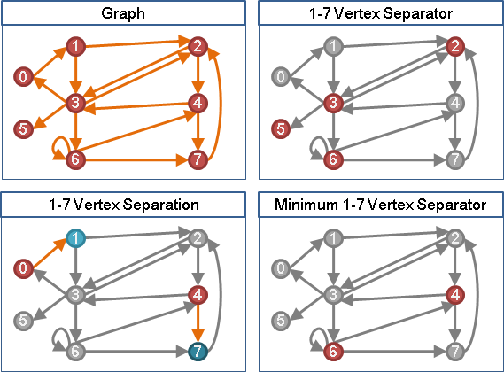Minimum Vertex Separator
「最小點分離器」。一張圖上點數最少的點分離器。可能有許多個。
Max-Flow Min-Cut Theorem：點容量為一，求最大流、最小割，得到最小點分離器。
Menger's Theorem：兩點之間，點不重覆（端點除外）的路徑同時最多有幾條。其數量等於最小點分離器的大小。
Vertex Connectivity
「點連通度」。欲讓圖不連通，至少需要拿掉的點數。
換句話說，一張圖上隨意拿掉「點連通度減一」個點，一定還是連通的。
窮舉所有點對，分別求最小點分離器的大小，取最小值即得。
ICPC 4322
Edge Separator
「邊分離器」。斷開a點到b點，使之不連通的邊集合。ab不相同才有討論意義。
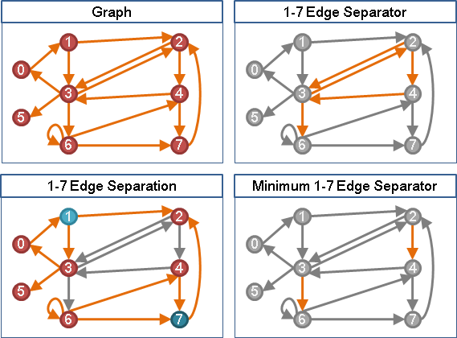Minimum Edge Separator（Minimum s-t Cut）
「最小邊分離器」。一張圖上邊數最少的邊分離器。可能有許多個。即是最小源匯割。
Max-Flow Min-Cut Theorem：邊容量為一，求最大流、最小割，得到最小邊分離器。
Menger's Theorem：兩點之間，邊不重覆的路徑同時最多有幾條。其數量等於最小邊分離器的大小。
Edge Connectivity
「邊連通度」。欲讓圖不連通，至少需要拿掉的邊數。
換句話說，一張圖上隨意拿掉「邊連通度減一」條邊，一定還是連通的。
窮舉所有點對，分別求最小邊分離器的大小，取最小值即得。
ICPC 3811
Closure
Closure
「閉包」。導出子圖，沒有聯外邊。可能有許多個。
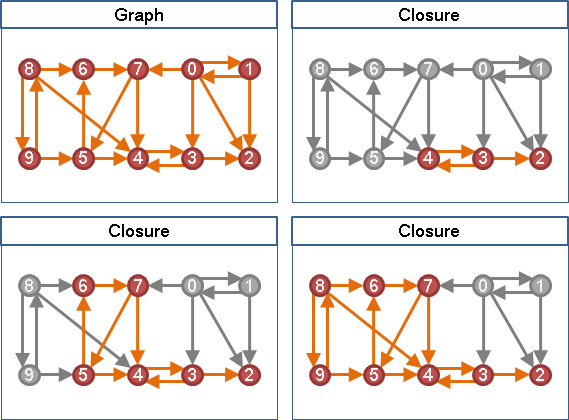Minimum Closure / Maximum Closure
「最小閉包」。點數最少的閉包，即是空圖，缺乏討論意義。
「最大閉包」。點數最多的閉包，即是原圖，缺乏討論意義。
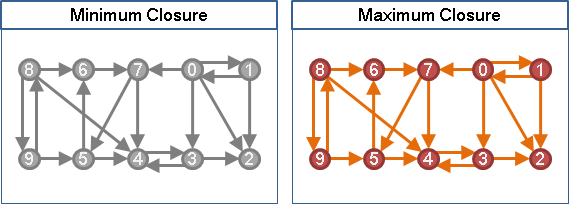無向圖的情況下，閉包是連通分量，缺乏討論意義。
有向圖的情況下，收縮強連通分量，得到DAG，容易找閉包。
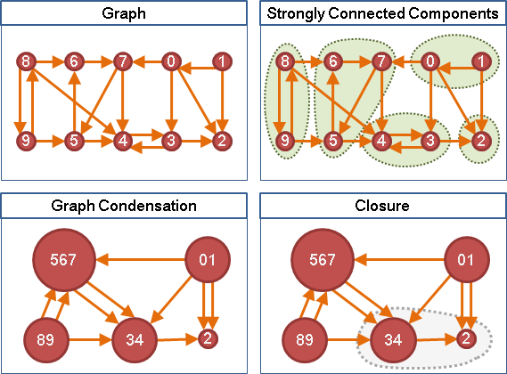Maximum Weight Closure
「最大權閉包」。一張圖上，點有權重、邊無權重，點的權重總和最大的閉包。只有唯一一個。
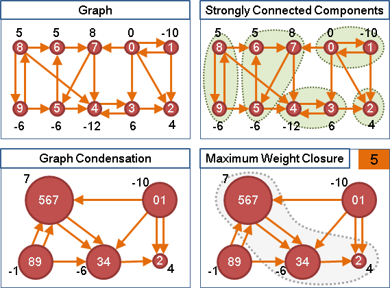無向圖演算法：權重最大的連通分量。
有向圖演算法：重新打造一張網路流量圖，求最小源匯割。我不知道為什麼這樣做，真是不好意思。
新增源點、匯點。源點連向所有正點，容量是正點權重；所有負點連向匯點，容量是負點權重變號；原圖的邊，容量是無限大。
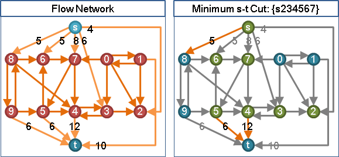最小源匯割不會包含容量無限大的邊。也就是說，源點側到匯點側，沒有容量無限大的邊、沒有原圖的邊。源點側沒有連外邊。源點側是閉包。源點側去掉源點即是最大權閉包。
PKU 2987 3155